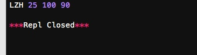
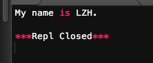

正常情况下，当我们定义了一个class，创建了一个class的实例后，我们可以给该实例绑定任何属性和方法，这就是动态语言的灵活性。
我们可以动态的给某一个实例绑定属性、方法。要绑定该类所有的实例的话，则可以将方法绑定到该类上。
# -*- coding: utf-8 -*-
class Student(object):
"""docstring for Student"""
pass
s = Student()
s.name = '梁中豪' # 动态给实例绑定一个属性
from types import MethodType
def set_age(self, age): # 定义一个函数作为实例方法
self.age = age
s.set_age = MethodType(set_age, s, Student) # 给实例绑定一个方法
s.set_age(25)
# 为了给所有实例都绑定方法，可以给class绑定方法：
def set_score(self, score): # 定义一个函数作为实例方法
self.score = score
Student.set_score = MethodType(set_score, None, Student)
s.set_score(100) #给class绑定方法后，所有实例均可调用
s2 = Student()
s2.set_score(90)
print s.name, s.age, s.score, s2.score

使用__slots__
如果我们想要限制class的属性怎么办？比如，只允许对Student实例添加name和age属性。那么可以使用一个特殊的__slots__变量。
# -*- coding: utf-8 -*-
class Student(object):
"""docstring for Student"""
__slots__ = ('name','age')
s = Student()
s.name = '梁中豪'
s.age = 21
print s.name, s.age
s.score = 90
print s.score

使用__slots__要注意，__slots__定义的属性仅对当前类起作用，对继承的子类是不起作用的. 除非在子类中也定义__slots__，这样，子类允许定义的属性就是自身的__slots__加上父类的__slots__。
使用@property
在绑定属性时，如果我们直接把属性暴露出去，虽然写起来很简单，但是，没办法检查参数，导致可以把成绩随便改。
这显然不合逻辑。为了限制score的范围，可以通过一个set_score()方法来设置成绩，再通过一个get_score()来获取成绩，这样，在set_score()方法里，就可以检查参数：
class Student(object):
def get_score(self):
return self._score
def set_score(self, value):
if not isinstance(value, int):
raise ValueError('score must be an integer!')
if value < 0 or value > 100:
raise ValueError('score must between 0 ~ 100!')
self._score = value
s = Student()
s.set_score(50)
s.get_score()
s.set_score(999)
s.get_score()

上面的调用方法又略显复杂，没有直接用属性这么直接简单。
对于类的方法，装饰器一样起作用。Python内置的@property装饰器就是负责把一个方法变成属性调用的：
class Student(object):
@property
def score(self):
return self._score
@score.setter
def score(self, value):
if not isinstance(value, int):
raise ValueError('score must be an integer!')
if value < 0 or value > 100:
raise ValueError('score must between 0 ~ 100!')
self._score = value
s = Student
s.score = 60
print s.score
@property的实现比较复杂，我们先考察如何使用。把一个getter方法变成属性，只需要加上@property就可以了，此时，@property本身又创建了另一个装饰器@score.setter，负责把一个setter方法变成属性赋值
如果只定义getter方法，不定义setter方法就是一个只读属性：
class Student(object):
@property
def birth(self):
return self._birth
@birth.setter
def birth(self, value):
self._birth = value
@property
def age(self):
return 2014 - self._birth
s = Student()
s.birth = 23
print s.birth
多重继承
继承是面向对象编程的一个重要的方式，因为通过继承，子类就可以扩展父类的功能。
一个类可以继承多个类，称为多重继承，如下所示：
# -*- coding: utf-8 -*-
class Animal(object):
"""docstring for Animal"""
pass
class Mammal(Animal):
"""docstring for Mammal"""
print 'Mammal'
class Bird(Animal):
"""docstring for Bird"""
print 'Bird'
class Runable(object):
"""docstring for Runable"""
def run(self):
print 'Running...'
class Flyable(object):
"""docstring for Flyable"""
def fly(self):
print 'Flying...'
class Dog(Mammal, Runable):
"""docstring for Dog"""
pass
class Bat(Mammal, Flyable):
"""docstring for Bat"""
pass
通过多重继承，一个子类就可以同时获得多个父类的所有功能。
Mixin
在设计类的继承关系时，通常，主线都是单一继承下来的，例如，Ostrich继承自Bird。但是，如果需要“混入”额外的功能，通过多重继承就可以实现，比如，让Ostrich除了继承自Bird外，再同时继承Runnable。这种设计通常称之为Mixin。
为了更好地看出继承关系，我们把Runnable和Flyable改为RunnableMixin和FlyableMixin。类似的，你还可以定义出肉食动物CarnivorousMixin和植食动物HerbivoresMixin，让某个动物同时拥有好几个Mixin：
class Dog(Mammal, RunnableMixin, CarnivorousMixin):
pass
由于Python允许使用多重继承，因此，Mixin就是一种常见的设计。
只允许单一继承的语言（如Java）不能使用Mixin的设计。
定制类
看到类似__slots__这种形如__xxx__的变量或者函数名就要注意，这些在Python中是有特殊用途的。
类似有很多特殊变量来帮助我们定制类：
__str__
我们先定义一个Student类，打印一个实例：
# -*- coding: utf-8 -*-
class Students(object):
"""docstring for Students"""
def __init__(self, name):
super(Students, self).__init__()
self.name = name
print Students('LZH')

得到上图所示，我们可以定制所打印的内容。
# -*- coding: utf-8 -*-
class Students(object):
"""docstring for Students"""
def __init__(self, name):
super(Students, self).__init__()
self.name = name
def __str__(self):
return 'Students object (name:%s)' %self.name
print Students('LZH')

这样打印出来的实例，不但好看，而且容易看出实例内部重要的数据。
当然这只是负责定制print方法输出的内容。直接敲变量不用print，打印出来的实例还是不好看。
这是因为直接显示变量调用的不是__str__()，而是__repr__()，两者的区别是__str__()返回用户看到的字符串，而__repr__()返回程序开发者看到的字符串，也就是说，__repr__()是为调试服务的。
class Student(object):
def __init__(self, name):
self.name = name
def __str__(self):
return 'Student object (name=%s)' % self.name
__repr__ = __str__ #因为两者方法几乎一样，所以可以直接偷懒将前者赋值给repr
__iter__
如果一个类想被用于for ... in循环，类似list或tuple那样，就必须实现一个__iter__()方法，该方法返回一个迭代对象，然后，Python的for循环就会不断调用该迭代对象的next()方法拿到循环的下一个值，直到遇到StopIteration错误时退出循环。
我们以斐波那契数列为例，写一个Fib类，可以作用于for循环：
# -*- coding: utf-8 -*-
class Fib(object):
"""docstring for Fib"""
def __init__(self):
self.a, self.b = 0, 1 # 初始化两个计数器a，b
def __iter__(self):
return self # 实例本身就是迭代对象，故返回自己
def next(self):
self.a, self.b = self.b, self.a + self.b
if self.a > 100:
raise StopIteration()
return self.a
for n in Fib():
print n

__getitem__
上述要表现得像list那样按照下标取出元素，需要实现__getitem__()方法：
# -*- coding: utf-8 -*-
class Fib(object):
"""docstring for Fib"""
def __getitem__(self, n):
a, b = 1, 1
for x in range(n):
a, b = b, a + b
print a
f = Fib()
f[0]
f[2]
f[4]

不能简单的直接执行切片方法，Fib会报错。原因是__getitem__()传入的参数可能是一个int，也可能是一个切片对象slice，所以要做判断：
# -*- coding: utf-8 -*-
class Fib(object):
"""docstring for Fib"""
def __getitem__(self, n):
if isinstance(n, int):
a, b = 1, 1
for x in range(n):
a, b = b, a + b
print a
if isinstance(n, slice):
start = n.start
stop = n.stop
a, b = 1, 1
L = []
for x in range(stop):
if x >= start:
L.append(a)
a, b = b, a + b
print L
f = Fib()
f[5]
f[1:5]

__getattr__
当定义好一个类后，若实例调用一个不存在的属性，则会报错，但是我们可以运用__getattr__动态返回一个属性。例如：
# -*- coding: utf-8 -*-
class Student(object):
def __init__(self):
self.name = 'Michael'
def __getattr__(self, attr):
if attr=='score':
return 99
s = Student()
print s.name
print s.score
print s.age

只有在没有找到属性的情况下，才调用__getattr__，已有的属性，比如name，不会在__getattr__中查找。
此外，注意到任意调用如s.age都会返回None，这是因为我们定义的__getattr__默认返回就是None。
这实际上可以把一个类的所有属性和方法调用全部动态化处理了，不需要任何特殊手段。例如动态的拼接api接口：
# -*- coding: utf-8 -*-
class Chain(object):
def __init__(self, path=''):
self._path = path
def __getattr__(self, path):
return Chain('%s/%s' % (self._path, path))
def __str__(self):
return self._path
print Chain().status.user.timeline.list
print Chain('LZH').status.user.timeline.list

__call__
任何类，只需要定义一个__call__()方法，就可以直接对实例进行调用。请看示例：
# -*- coding: utf-8 -*-
class Students(object):
"""docstring for Students"""
def __init__(self, name):
super(Students, self).__init__()
self.name = name
def __call__(self):
print ('My name is %s.' % self.name)
s = Students('LZH')
s()
